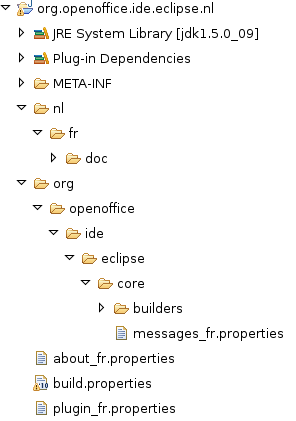

Abstract
This document explains how to add a new implementation support and how to internationalize the plugin. This is a part of the plugin developer's documentation.
To bring the plugin to other languages, there are a few things to do. Even if you have no knowledge of Java, internationalizing the plugin will be easy, because there is no code to write or read. Here is a short list of what to translate or change:
the messages strings
the on-line help
some images
First create a new plugin fragment using the File
> New > Fragment project menu. In this tutorial, the project name
will be org.openoffice.ide.eclipse.core.nl,
and the host plugin has to be org.openoffice.ide.eclipse.core.
Then you will create the following structure:
We can distinguish three parts in this tree:
|  |
the nl/fr directory: contains all
the directories at the plugin root, i.e. doc.
This will reproduce each plugin directory and file with the translated
version. Note that the German translation would be located in the nl/de directory and the fr_BE translation would
be in nl/fr/BE directory.
the org directory: reproduces all
the source tree. Then for each .property file containing strings to
translate, there will be a _lang_REGION.properties
file, e.g.: messages_fr.properties. To add
a German translation, simply add a messages_de.properties
file beneath the messages_fr.properties
file.
the plugin_fr.properties and about_fr.properties files: contains all the
translated strings from the plugin.properties
and about.properties file of the host
plugin.
Note that the Plugin dependencies and JRE library could be remove
from the project class path as well as the initially created src directory.
Now that you have translated everything, you will have to package
you plugin fragment. For this, double click on the META-INF/MANIFEST.MF
file contained in the fragment and add the following items to the binary
build in the “build”
tab:
nl
org
all the translated plugin.properties
and about.properties files (i.e.: plugin_fr.properties and so on)
Then you will have to build the plugin fragment. In the same editor, select the “Overview” tab and click on the “Export Wizard” link. Just select the fragment and the destination file before to click on “Finish”: you fragment is generated.
For the moment, there is no structure on the CVS to automate the language fragments build: this will come later. But all the language fragments will certainly be put together in one fragment as other Eclipse plugins do.